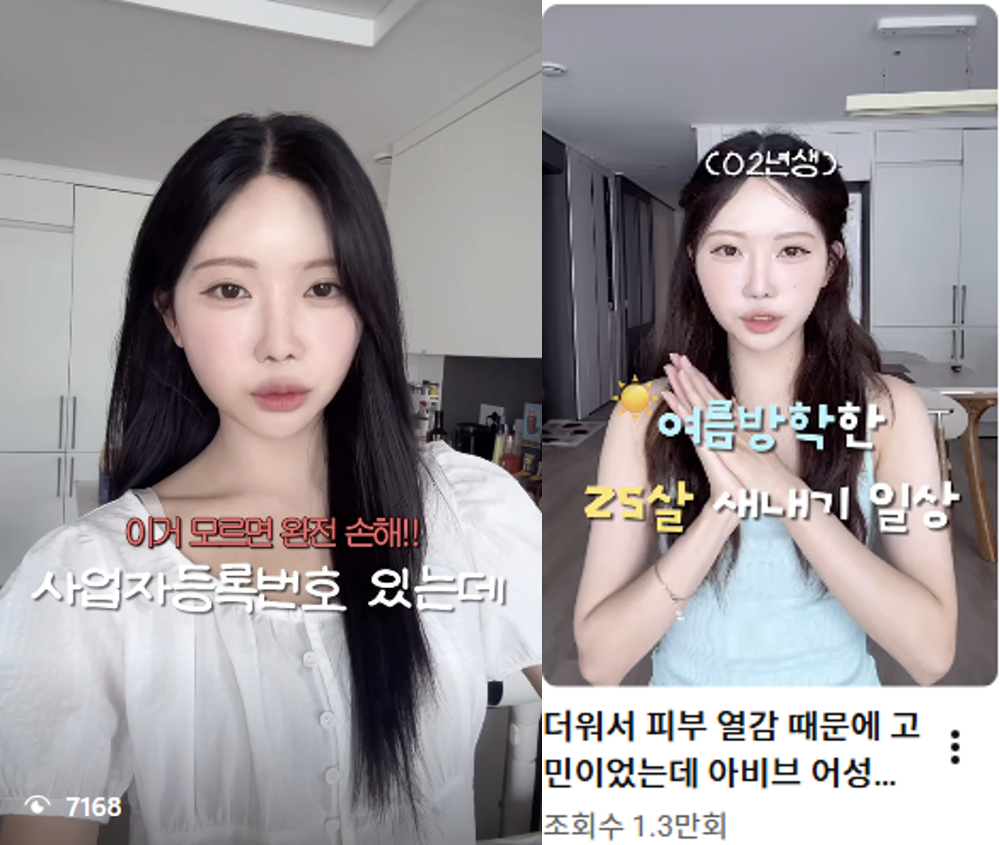
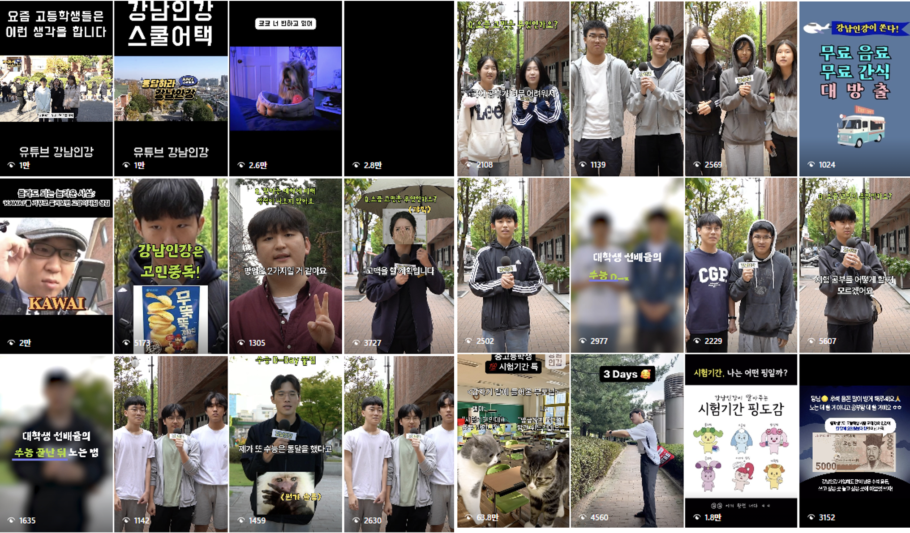

DATA
20+ Brands Data Audited 3년치·20여 개 브랜드 데이터를 검증해 성과 판단과 예산 의사결정의 정확도를 높인 경험2026 LOTTE DEPARTMENT STORE SALES PLANNING PORTFOLIO
MAKE MY NEXT [ Store Growth ]
지역의 관심과 고객 데이터를 읽고, 점포 방문과 매출 성장으로 연결하는 영업기획을 지향합니다.
STRATEGY
Store Growth Planning 고객·상권·채널 데이터를 바탕으로 방문 목적과 매출 전환을 설계하는 영업기획 지향AI NATIVE
AI-Driven Operation Improvement AI와 자동화로 반복 운영을 개선하고 현장 업무 시간을 70% 이상 단축한 실행 경험
아티스트앤스튜디오 인플루언서 파트너십 매니저
2026.05 - ing인플루언서 파트너십 매출 기회 확장 경험
상황 (Situation)
MCN에서 인플루언서 파트너십 매니저로 활동하며 브랜드와 크리에이터의 요구가 동시에 맞물리는 협업 구조를 운영하고 있습니다.
목표 (Task)
단순 전달자가 아니라 브랜드 목표와 크리에이터 강점을 연결해 추가 협업 가능성과 실행 완성도를 높이는 것을 목표로 합니다.
실행 (Action)
- 브랜드 요청사항과 크리에이터 콘텐츠 방향을 정리해 협업 범위와 우선순위 조율
- 필수 소구점, 업로드 일정, 2차 활용 가능성 등 실행 조건을 사전에 점검
- 피드백 발생 시 핵심 요구를 분류하고 양측이 수용 가능한 수정 방향 제안
- 쇼츠·릴스 미러링, 2차 활용 등 추가 매출 기회로 확장 가능한 협업 구조 검토
직무 연결 (Fit)
롯데백화점에서도 입점 브랜드, 협력사, 지역 파트너, 내부 부서의 목표를 조율하며 판촉·이벤트 실행력을 높이고, 현장의 매출 기회를 구체적인 운영 성과로 연결하겠습니다.
이 경험은 고객과 브랜드, 파트너 사이의 이해관계를 읽고 실행 가능한 합의점을 만드는 영업기획·지원 역량으로 이어집니다.

아모레퍼시픽 브랜드전략팀 인턴사원
2025.03 - 2025.07인플루언서 마케팅 효율 개선 프로젝트
문제 정의 (Situation)
20여 개 브랜드의 SNS 캠페인 데이터에서 식별 기준이 불일치해 성과 지표가 왜곡되고, 예산 배분 판단까지 흔들릴 수 있는 상황
접근 (Task)
매출과 손익 판단의 출발점이 되는 데이터 신뢰도를 높이기 위해 브랜드 간 비교 가능한 성과 기준 구축을 목표로 설정
실행 (Action)
- 피벗테이블 및 필터 기능을 활용해 중복 데이터 탐지 및 구조 재정의
- 동일 인플루언서를 통합하는 기준 테이블과 데이터 입력 표준 설계
- 1개월간 샘플·기존 데이터 교차 검증을 통해 정합성 확보
- 플랫폼별 협업 효율을 비교할 수 있는 분석 구조와 재발 방지용 관리 가이드 제작
성과 (Result)
- CPE와 협업 성과를 신뢰도 높게 산출할 수 있는 분석 환경 구축
- 성과 판단과 예산 우선순위 검토에 활용 가능한 데이터 기반 마련
- 업무 정합성 약 15% 개선
이를 바탕으로 롯데백화점에서도 점포별 매출·고객·프로모션 데이터를 정확히 읽고, 매출 목표와 예산 우선순위를 판단하는 영업기획의 기반을 만들겠습니다.

대홍기획 전략팀 인턴
2024.06 - 2024.12상황 분석 기반 광고 전략 도출 경험
문제 정의 (Situation)
복잡한 산업·시장 구조 속에서 고객과 경쟁 환경을 이해해야 실행 가능한 전략 방향을 세울 수 있었던 상황
접근 (Task)
사업·시장·경쟁사·고객 데이터를 통합 분석하여 현장 실행으로 이어질 수 있는 전략 인사이트 구조 구축을 목표로 설정
실행 (Action)
- 반도체 제품 포트폴리오, 공정 과정, IT·AI 산업 동향을 분석
- 핵심 내용을 ‘팩트북’ 형태로 구조화하여 인사이트 도출
- 팀 브리핑 및 협력부서 전달을 통해 전략 방향 공유
- 데스크 리서치 한계를 보완하기 위해 전공생 대상 FGI 수행
성과 (Result)
- 시장과 고객 이해를 기반으로 한 전략 인사이트 도출
- 도출된 인사이트가 실제 기획 방향 설정에 반영
- 데이터와 현장 의견을 결합한 실행 가능한 전략 설계 경험 확보
롯데백화점에서도 상권·고객·상품군 데이터를 바탕으로 점포별 영업 방향성을 세우고, 방문과 구매로 이어지는 실행 전략을 제안하겠습니다.

마녀공장 마케팅팀 인턴
2023.04 - 2023.07타겟 맞춤 SNS 마케팅 프로젝트
문제 정의 (Situation)
신제품과 고객 타겟의 접점이 제한되어 콘텐츠와 프로모션의 효율을 동시에 높여야 했던 상황
접근 (Task)
제품 USP와 타겟 고객을 기반으로 콘텐츠 접점부터 이벤트 참여까지 이어지는 프로모션 구조 설계
실행 (Action)
- 제품별 타겟에 맞는 인플루언서 선정 및 시딩 전략 운영
- USP 기반 콘텐츠 가이드라인 제작 및 인플루언서 협업 관리
- 콘텐츠 업로드, 광고법 준수, 노출 성과 등 전 과정 모니터링
- 공식 SNS 채널 신제품 런칭 이벤트 기획 및 운영
- 디자인팀과 협업하여 콘텐츠 제작 및 캠페인 실행
성과 (Result)
- 제품별 타겟 전략으로 신규 소비자 접점 확보 및 네이버 검색량 증가
- SNS 이벤트 운영을 통해 인게이지먼트 42.6% 향상
- 기획-섭외-운영-성과분석까지 전 과정 관리 역량 확보
이 경험을 바탕으로 롯데백화점에서도 상품군과 고객 세그먼트별 특성에 맞는 판촉·이벤트를 운영하고, 성과 데이터를 근거로 집객과 매출 개선을 이끌겠습니다.

LG유플러스 대학생 서포터즈 유대감 11기
2022.10 - 2023.0420대 전용 신규 영브랜드 '유쓰' 홍보 프로젝트
문제 정의 (Situation)
20대 전용 신규 브랜드가 낮은 인지도와 함께 고객이 반복적으로 떠올릴 방문·혜택 이유가 약한 상황
접근 (Task)
20대의 소비 패턴과 콘텐츠 소비 방식을 고려하여 혜택을 기념일처럼 기억하게 만드는 로열티형 경험 설계
실행 (Action)
- 20대 타겟의 콘텐츠 트렌드 및 행동 패턴 분석
- 서비스 USP(매월 20일 혜택)를 기반으로 ‘20일=OO데이’
→ ‘생일처럼 선물 받는 경험’으로 재해석 - ‘해피OO데이’ 컨셉을 통해 브랜드 메시지를 일관된 경험 구조로 설계
- 인스타그램 릴스 트렌드를 반영한 콘텐츠 제작 및 실행
성과 (Result)
- 콘텐츠 조회수 약 1.6천 회 달성 및 월 우수활동자 선정
- 제안한 컨셉이 현재까지 브랜드 자산으로 지속 활용
- 타겟 고객에게 브랜드를 ‘기념일’로 인식시키는 경험 설계 성과 확보
이를 통해 롯데백화점에서도 우수고객과 타겟 고객의 생활 리듬을 반영한 CRM 프로그램을 설계하고, 반복 방문과 로열티를 강화하는 경험을 만들겠습니다.

삼양그룹 서포터즈 삼양씨즈 6기
2022.08 - 2022.10채널별 디지털 콘텐츠 마케팅 프로젝트
문제 정의 (Situation)
초기 콘텐츠와 이벤트의 참여율이 낮아 온라인 관심을 실제 참여와 방문 동기로 확장해야 했던 상황
접근 (Task)
콘텐츠 도달률을 확대하고 참여를 유도하기 위해 채널별 특성을 반영한 OSMU 기반 고객 여정 설계
실행 (Action)
- 숏폼, 카드뉴스, 블로그 등 채널별 콘텐츠 병행 운영
- 콘텐츠와 참여형 이벤트를 결합하여 고객 접점 확대
- 페르소나 SNS 계정 운영을 통해 약 1천 명 타겟 팔로워 확보
- 채널별 반응을 기반으로 콘텐츠 방향 지속 개선
성과 (Result)
- 콘텐츠 조회수 약 1.4천 회, 이벤트 참여자 97명 달성
- 참여율 30% 이상 개선
- 채널 확장을 통한 브랜드 인지도 및 고객 참여도 상승
- 최우수활동팀 선정
이 경험을 바탕으로 롯데백화점의 온라인 채널을 운영하며, 사전 기대감-현장 방문-사후 공유로 이어지는 온·오프라인 연계 매출 활성화 방안을 기획하겠습니다.

교내 광고·PR 에이전시 K:Solution Factory 9기
2024.09 - 2024.12강남구청 인강 플랫폼 '강남인강' 홍보 프로젝트
상황 (Situation)
강남구청 인강 플랫폼 '강남인강'은 학생 접점에서 더 친근하고 적극적인 SNS 커뮤니케이션이 필요한 상황이었습니다.
목표 (Task)
인강 플랫폼 인지도를 높이고, 실제 타깃 반응을 이끌 수 있는 콘텐츠 운영과 오프라인 캠페인 구조를 만드는 것을 목표로 했습니다.
실행 (Action)
- 릴스 24편, 카드뉴스 3편, 유튜브 영상 1편을 기획·제작하며 공식 인스타그램 운영
- 학생 타깃의 반응을 고려해 짧고 직관적인 숏폼 콘텐츠 포맷으로 메시지 재구성
- 온라인 콘텐츠와 오프라인 스쿨어택 캠페인을 연계해 플랫폼 경험 접점 확대
- 담당교수 및 학생직원과 협업하며 역할, 일정, 콘텐츠 품질을 함께 조율
성과 (Result)
- SNS 인게이지먼트 231% 증가
- 공식 계정 팔로워 11% 증가
- 최고 숏폼 조회수 64만 회 기록
이 경험을 바탕으로 롯데백화점에서도 온라인 콘텐츠와 현장 이벤트를 함께 설계해, 검색 관심과 SNS 반응을 실제 방문과 체류로 전환하는 운영에 기여하겠습니다.
READY FOR LOTTE
[L-Insight Tracker] 지역축제 데이터로 읽는 방문 수요 맵
2026년 전국 지역축제 개최 계획 데이터를 활용해 지역별 축제 수와 전년 방문객 규모를 정리했습니다.
지역별 관심·방문 흐름을 점포 집객, 로컬 팝업, 관광 연계 프로모션으로 확장할 수 있는 영업기획 관점의 인터랙션 데이터 맵입니다.
방문객 기준 상위 지역
Source. 문화체육관광부_지역축제 정보_2026, 2026년 지역축제 개최 계획 현황(공개용) 조사표 기준. 방문객수는 전년 방문객수 컬럼 합계입니다.
LOCAL FESTIVAL TO LOTTE STORE
지점별 지역축제 연계 팝업 제안
롯데 지점을 선택하면 해당 지역의 인기 축제와 연결 가능한 팝업·행사 아이디어가 바뀝니다.
축제 방문 수요를 점포 유입과 구매 전환으로 확장하는 영업기획 시뮬레이션입니다.
MAKE MY NEXT [STORE GROWTH]